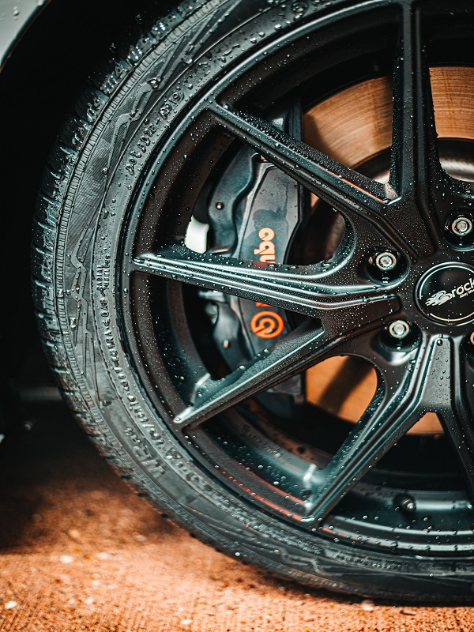

Maintenance and repairs
From oil services, to brake jobs, to advanced diagostics, you can rest knowing that your vehicle is in good hands. Rotor RE-hab's technicians have over 12 years of experience with rotary powered vehicles.

We breathe life into your rotary powered vehicle.
From oil services, to brake jobs, to advanced diagostics, you can rest knowing that your vehicle is in good hands. Rotor RE-hab's technicians have over 12 years of experience with rotary powered vehicles.
Whether you need your engine refreshed for your unmodified classic, or you need an engine tailored specifically for your racing style, Rotor RE-hab has you covered. We have been building reliable and powerful rotary engines for years!
Rotor RE-hab is capable in performing all types of rotary engine porting. We have made proven and reliable power with our ports!
From single turbo conversions, suspension fine-tuning, aero upgrades, and just about anything that makes a car perform better, Rotor RE-hab has you covered. We have been making cars fast for a long time and know what works and what doesn't!
The secret to a reliable and powerful rotary engine is in the tune. Rotor RE-hab has the know-how to make your engine operate at its full potential.